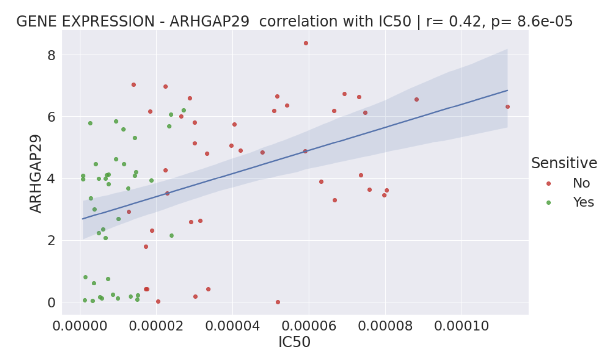
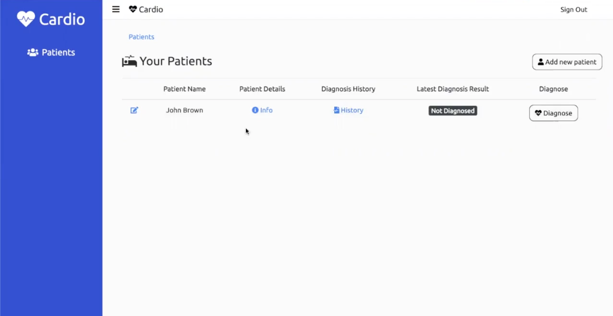
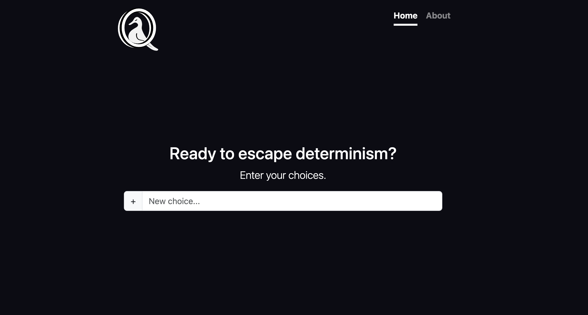
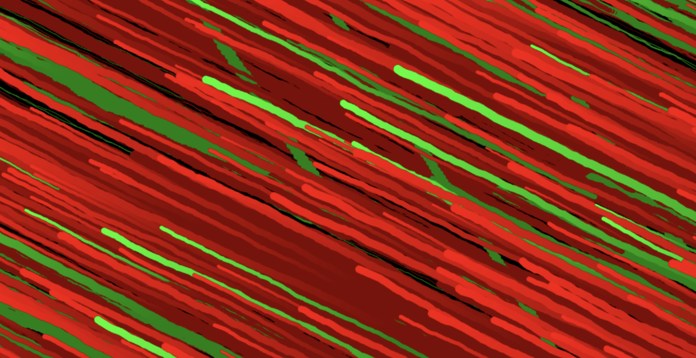
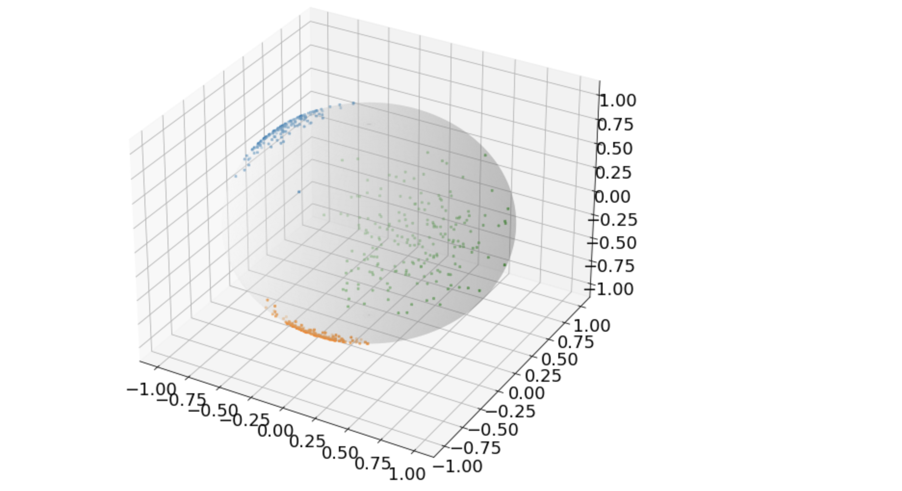

This website contains a summary of some of my personal projects, technical skills, experiences, and education.
Experience
Relevant
Programming Lab Support Assistant
Newcastle University
January 2021 - June 2021
- Assisted first year Computer Science students through programming assignments (mostly Java), ensuring they understood solutions.
- Developed my communication and mentoring skills by practising explaining complicated concepts to less technically skilled audiences.
Chief Technology Officer
Great Britain - Cyprus Business Association
December 2019 - May 2021
- Created and managed the webpage. Was responsible for everything technical related involving the association.
- Learned more about the business world and how to be successful in it.
- Learned how to communicate effectively with clients.
- Further developed my problem-solving, time-management, and planning skills.
Web Developer
Veroneon.com
April 2019 - September 2019
- Assisted in the maintenance of the online business using Shopify.
- Improved my teamworking skills and my ability to execute superiors' instructions successfully.
positions of responsibility
Peer Mentor
Newcastle University
September 2020 - June 2021
- Responsible for mentoring 12 first year Computer Science students and helping them adjust to university life.
- Sharing things I wished I knew when I was first starting university.
- Made me a better listener, more proactive, and more confident in helping others.
additional work experience
Infantry Soldier, Anti-Tank Warfare Expertise
Cyprus National Guard
July 2017 - September 2018
- Leader of a squad of eight people assigned to a point on Cyprus's buffer zone (green line).
- Developed team-leading, problem-solving, survival and stress managing skills.
Education
MPhil Population Health Sciences (Health Data Science stream)
University of Cambridge
October 2022 - Present
RELEVANT MODULES
Applied Machine Learning, Intro to Machine Learning, Genetic Epidemiology, Statistics for HDS, Advanced Biostatistics, Applied Data Analysis
AWARDS
Full tuition scolarship based on academic excellence
MSc Artificial Intelligence
University of St Andrews Distinction (90.5%)
September 2021 - September 2022
RELEVANT MODULES
AI Principles, AI Practice,
Machine Learning, Signal Processing, Constraint Programming, Language and Computation,
Interactive Software and Hardware
AWARDS
Dean's list
BSc Computer Science
Newcastle University First Class
(81.8%)
September 2018 - June 2021
RELEVANT MODULES
Bioinformatics, Mathematics
for Computer Science, Database Technology, Web Technologies, Software Engineering,
Cryptography, Human-Computer Interaction, Mobile Development
AWARDS
ncl+ award
Technical Skills proficiency
relevant languages
Python
Java
R
Javascript
SQL
Matlab
PHP
relevant technologies/libraries
Scikit-learn
Pandas
NumPy
Matplotlib, Seaborn
Flask
Firebase
NLTK, spaCy
Highlighted Projects
I recently worked on a variety of projects, and I would like to showcase a selection of them here. However, if you're interested in seeing more, you can check out my Github profile where you can find a more comprehensive list of my work (even though not all of my projects are public).
St Andrews dissertation
Use of machine learning to identify biomarkers that can predict sensitivity or resistant to a new anti-cancer drug (NUC-7738) using extremely high dimensional multi-omics data.
Newcastle dissertation
Using machine learning to aid the diagnosis of cardiovascular disease. Implemented a full stack web platform that doctors can use to obtain an ML prediction on a patient's CVD risk.
Quantum-Quack.org
Quantum Quack makes a random choice in a list of options you provide. The choice is made using quantum random numbers, which are truly random, as opposed to ordinary random numbers.
Holodoro

An interactive software and hardware project that rewards the users by automatically watering their favourite plant whenever they study. Oh, and it also involves a holographic timer!
Interactive Art
The prototype is an interactive public-facing display board built with Arduino and p5.js that allows users to iteratively create their own art piece. It could potentially be found in a modern art museum and its target audience are art enthusiasts.
Unsupervised Learning - Clustering
Own implementation of two unsupervised learning clustering algorithms, Spherical K-Means and EM. The two algorithms were tested and compared on one low-dimensional and one high-dimensional dataset.
Contact Details
Personal Email: rafaelkoll98@gmail.com
Academic Email: rk720@cam.ac.uk
Mobile: +44 7999437959